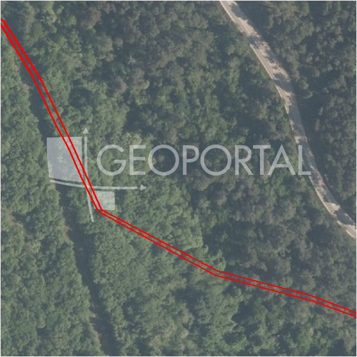

#63424 · TAR-VABRIGA!!! Dvije ruševine za kompletno renoviranje sa 1460 m2 okuć
Tar, Tar-Vabriga, Istarska · kuca · njuskalo · status active · oglas ↗
Ocjena
- Score
- 60 rule 60 · LLM – · 12.09.2026.
- RLV
- 1,31 M€ (826 €/m²) · ratio 2,38
- Ukupna investicija
- 3,71 M€
- GBP
- 1.268 m²
- Feedback
- –
- CRM
- –
Oglas
- Cijena
- 550.000 € (377 €/m²)
- Površina
- 1.460 m² · DKP 1.585 m² (odstupanje 8,6 %)
- Prodavatelj
- agencija · In fiducia nekretnine d.o.o.
- Prvi put
- 11.09.2026. · zadnje 11.09.2026. · 0 d na tržištu
Povijest cijene
| Datum | Cijena |
|---|---|
| 11.09.2026. | 550.000 € |
Flagovi
zop_70_100 ZOP pojas 70/100 m (−10)zone_uncertainty zona nije pregledana (reviewed: false) (−5)
kuca_za_rusenje kuća za rušenje
zona_iz_oglasa zona preuzeta iz teksta oglasa (bez GIS-a)
llm_pending LLM ekstrakcija/ocjena nedostupna
Komponente score-a
| rlv | {'gbp': 1268.1680000000001, 'kis': 0.8, 'nkp': 951.1260000000001, 'noi': None, 'rlv': 1308690.3469565217, 'ratio': 2.379436994466403, 'value': None, 'phases': 1, 'profile': 'obala_visestambeno', 'gdv_neto': 5326305.600000001, 'cost_soft': 126966.80000000003, 'gdv_bruto': 6657882.000000001, 'kis_known': False, 'total_inv': 3706143.2800000003, 'cost_build': 2539336.0000000005, 'cost_other': 456840.4800000001, 'cost_sales': 199736.46000000002, 'demolition': True, 'gbp_source': 'kis', 'rlv_per_m2': 825.5627626349327, 'parcel_area': 1585.21, 'parcelation': False, 'roi_on_cost': 0.3832625326886985, 'profit_at_ask': 1420425.8600000003, 'cost_demolition': 3000.0, 'total_inv_phase': 3706143.2800000003, 'parcel_area_effective': 1585.21, 'sale_price_per_m2_nkp': 7000.0} |
| hard | [] |
| info | ['kuca_za_rusenje', 'zona_iz_oglasa', 'llm_pending'] |
| rubric | {'permits': {'max': 5.0, 'detail': {'permit': 'none'}, 'points': 0.0}, 'location': {'max': 15.0, 'detail': {'source': 'rlv.yaml:istra_zapad/row1', 'sale_price_per_m2_nkp': 7000.0}, 'points': 15.0}, 'physical': {'max': 4.0, 'detail': {'slope_pct': 23.32, 'slope_points': 0.33599999999999997, 'sea_row1_bonus': True}, 'points': 1.34}, 'liquidity': {'max': 3.0, 'detail': {'n_cuts': 0, 'points_cut': 0.0, 'points_days': 0.008333333333333333, 'seller_type': 'agencija', 'points_fresh': 0.5, 'price_cut_pct': None, 'days_on_market': 1, 'points_private': 0}, 'points': 0.51}, 'rlv_ratio': {'max': 25.0, 'detail': {'rlv': 1308690, 'ratio': 2.379, 'asking_price': 550000.0}, 'points': 25.0}, 'ticket_fit': {'max': 10.0, 'detail': {'asking_price': 550000.0}, 'points': 10.0}, 'zone_quality': {'max': 8.0, 'detail': {'source': 'oglas', 'zone_class': 'stambeno', 'zone_ideal': True}, 'points': 3.0}, 'profit_potential': {'max': 20.0, 'detail': {'roi_on_cost': 0.383, 'profit_at_ask': 1420426}, 'points': 20.0}, 'price_vs_benchmark': {'max': 10.0, 'detail': {'source': 'auto:Tar-Vabriga', 'deviation': -0.505, 'ask_eur_m2': 377, 'benchmark_eur_m2': 250.25}, 'points': 0.0}} |
| weights | {'llm': 0.4, 'rule': 0.6, 'model': 0.0} |
| penalties | {'zop_70_100': 10, 'zone_uncertainty': 5} |
| raw_score | 74,8 |
| rlv_notes | [] |
| flag_notes | {'max_gbp': 1268, 'zop_band': '70', 'total_inv': 3706143, 'zone_code': 'S', 'zone_class': 'stambeno', 'zone_source': 'oglas', 'zone_reviewed': None} |
| caps_applied | [] |
GIS
- Čestica
- k.o. 323772, k.č. 1734 (pin_buffer, 0,76); k.o. 323772, k.č. *15 (pin_buffer, 0,47); k.o. 323772, k.č. 205/1 (pin_buffer, 0,40)
- Zona
- S (–)
- kig / kis / katnost
- – / – / –
- GP / UPU
- – · UPU –
- Pristup / nagib
- unknown · 23,3 % (max 57,2 %)
- More
- 0 m · red 1 · ZOP 70
- Zaštite
- Natura ne · zaštićeno ne · kulturno dobro ne
- Zgrade na čestici
- 0 %
- Match
- 0,76
Karta
Ortofoto (DOF)

RLV kalkulacija — pretpostavke
| gbp | {'value': 1268.1680000000001, 'source': 'kis'} |
| kis | {'value': 0.8, 'source': 'default_profila'} |
| sea_row | {'value': '1', 'source': 'gis'} |
| soft_pct | {'value': 0.05, 'source': 'profil'} |
| nkp_ratio | {'value': 0.75, 'source': 'profil'} |
| cost_other | {'value': 456840.4800000001, 'source': 'profil: doprinosi+uređenje po m² GBP, financiranje+rezerva % gradnje'} |
| parcel_area | {'value': 1585.21, 'source': 'dkp'} |
| asking_price | {'value': 550000.0, 'source': 'oglas'} |
| margin_on_cost | {'value': 0.15, 'source': 'profil'} |
| demolition_cost | {'value': 3000.0, 'source': 'profil × m²'} |
| existing_building_m2 | {'value': 50.0, 'source': 'oglas'} |
| build_cost_per_m2_gbp | {'value': 2000.0, 'source': 'profil'} |
| sale_price_per_m2_nkp | {'value': 7000.0, 'source': 'rlv.yaml:istra_zapad/row1'} |
| transfer_tax_and_acquisition | {'value': 0.06, 'source': 'profil'} |
Ekstrakcija iz oglasa
| zone_claim | S |
| floors_claim | P+1 |
| building_on_parcel | ruin |
| existing_building_m2 | 50.0 |
Benchmarks mikrolokacije
| Vrsta | Vrijednost | n | Od | Izvor |
|---|---|---|---|---|
| land_ask_eur_m2 | 250 | 29 | 11.09.2026. | auto |
| newbuild_sale_eur_m2_nkp | 4.262 | 7 | 11.09.2026. | auto |
Opis oglasa
Tar–Vabriga – dvije kamene kuće za kompletnu adaptaciju na velikoj građevinskoj parceli s investicijskim potencijalom U samom centru mjesta Tar–Vabriga prodaju se dvije autohtone kamene kuće smještene na građevinskoj parceli ukupne površine 1.507 m2. Prva kuća ima tlocrtnu površinu od cca 50 m2, dok druga ima tlocrt cca 40 m2, te se proteže na dvije etaže. Obje kuće zahtijevaju kompletnu adaptaciju, što budućem vlasniku omogućuje potpunu slobodu u planiranju i uređenju prostora. Zemljište je stambene namjene i zbog svoje površine te atraktivne lokacije pruža izniman investicijski potencijal – mogućnost rekonstrukcije postojećih objekata, izgradnje dodatnih stambenih jedinica ili razvoja projekta za turistički najam, u skladu s važećim prostornim planom. Nekretnina se nalazi u centru mjesta, u neposrednoj blizini svih sadržaja, a istovremeno nudi privatnost i mir, što dodatno povećava njezinu tržišnu vrijednost. Idealna prilika za investitore, developere ili kao dugoročna investicija u Istri.